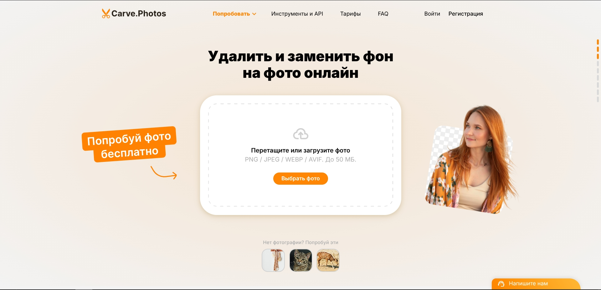

Carve.Photos — обзор инструмента для удаления фона с фотографий
В арсенале каждого, кто работает с изображениями, должен быть надёжный инструмент для работы с фоном. Carve.Photos — это онлайн-сервис, который специализируется на автоматическом отделении объектов от заднего плана. Мы протестировали его в деле и готовы поделиться честным мнением: насколько чисто нейросеть «вырезает» сложные элементы и когда этот инструмент действительно экономит время.
Если вам нужно подготовить прозрачный PNG, сделать карточку товара для маркетплейса или быстро изолировать объект для коллажа — этот обзор поможет понять, справится ли Carve.Photos с вашими задачами.
Что такое Carve.Photos?
Carve.Photos — это веб-приложение на базе искусственного интеллекта, предназначенное для быстрого удаления фона. В отличие от традиционных графических редакторов, где нужно вручную обводить контуры объекта «пером» или использовать сложные маски, здесь нейросеть делает всё сама. Алгоритм автоматически распознаёт главный объект в кадре и отделяет его от окружения, создавая чистый PNG-файл.

💡 Ключевая особенность: не требует регистрации для базового функционала и работает прямо в браузере.
Как это работает?
В Carve.Photos реализован гибридный подход: нейросеть делает 90% работы за вас, но оставляет инструменты для финальной шлифовки. Весь процесс делится на три этапа:
- Автоматическое удаление. Вы загружаете фото (драг-н-дроп или через выбор файла), и ИИ за несколько секунд определяет границы объекта, отделяя его от фона.
- Ручная корректировка (Кисть). Если алгоритм сработал не идеально (например, на сложных прядях волос), воспользуйтесь встроенным редактором. С помощью кисти «Стереть/Восстановить» можно точечно подправить края или вернуть случайно удаленный элемент.
-
Кастомизация фона. После удаления старого фона сервис позволяет:
1. Оставить его прозрачным (идеально для дизайнеров).
2. Залить однотонным цветом (белым для маркетплейсов или любым другим).
3. Подставить другое изображение из библиотеки сервиса или загрузить своё.
Возможности инструмента
Автоматическое удаление фона
Нейросеть мгновенно определяет границы главного объекта и отделяет его от окружения. Вам не нужно вручную обводить контуры — ИИ сделает всё за несколько секунд.
Ручная коррекция
Если алгоритм ошибся, встроенная кисть позволит «подтереть» лишнее или восстановить случайно удалённые детали. Это даёт полный контроль над финальным результатом.
Быстрая замена окружения
Вы можете не просто оставить фон прозрачным, но и сразу залить его цветом или подставить другое изображение. Полезно для моментального создания карточек товаров или баннеров.
Сохранение в высоком качестве
Инструмент не превращает фото в «мыло». В отличие от многих бесплатных аналогов, здесь можно скачать результат в хорошем разрешении, пригодном для работы и печати.
Преимущества и недостатки
Плюсы
- • Доступный старт без регистрации — можно быстро обработать фото, не тратя время на создание аккаунта.
- • Ежедневный бесплатный пакет — сервис дает 10 скачиваний в Free-качестве каждый день, чего достаточно для разовых бытовых задач.
- • Наличие Telegram-бота — удобная альтернатива для тех, кто привык обрабатывать изображения прямо в мессенджере.
- • Интеграция с Photoshop — наличие плагина делает инструмент полезным для профессиональных дизайнеров, ускоряя их рабочий процесс.
Минусы
- • Платное HD-качество — скачать результат в исходном разрешении можно только за баллы. Бесплатно доступен лишь Preview (до 1280px), чего не всегда хватает для профессиональной печати.
- • Ограничения на сложные контуры — как и любая нейросеть, Carve может допускать ошибки («рваные края») на пушистых волосах, прозрачных объектах или сетках. В таких случаях приходится дорабатывать края вручную.
- • Узкая специализация — инструмент только удаляет фон. Для ретуши дефектов или удаления лишних людей воспользуйтесь другими инструментами из нашей коллекции.
Для кого подойдёт Carve.Photos?
Блогеры и SMM-специалисты
Для быстрой подготовки контента в соцсети и создания стикеров без освоения сложных редакторов.
Менеджеры маркетплейсов
Чтобы быстро привести фотографии товаров к единому стандарту, сделав фон идеально белым или прозрачным.
Дизайнеры и web-мастера
Как инструмент для экспресс-обработки исходников и создания быстрых коллажей или макетов.
Обычные пользователи
Для личных задач: подготовить фото на документы, заменить скучный фон на снимке из отпуска или вырезать объект для творчества.
Тарифы Carve.Photos на апрель 2026
Информация о тарифах получена на сайте https://carve.photos/pricing
Бесплатный
Попробуйте сервис
Приветственный бонус
- 1 фото в высоком качестве
- 5 запросов через плагины и API
- 10 фото в Free качестве ежедневно
- Обработка в Telegram-боте
Премиум
Работа без ограничений
Цена зависит от количества фото
На сайте есть калькулятор
- Оригинальное качество
- Баланс не «сгорает»
- Пакетная обработка
- Плагин Photoshop
- Без автосписаний
Для бизнеса
Персональное предложение
Под ваши задачи
- Индивидуальные условия
- Доступ к API
- Оплата по счёту
- Работа через ЭДО
- Заказная разработка
Важно: В тарифе «Премиум» цена рассчитывается индивидуально в зависимости от объёма обработки. Используйте калькулятор на официальном сайте для точного расчёта стоимости.
Альтернативы Carve.Photos
Если возможности Carve.Photos вам недостаточно или нужен другой тип обработки, в нашей коллекции есть несколько проверенных решений под разные задачи:
Remove.bg
Золотой стандарт удаления фона с лучшими алгоритмами для сложных волос.
- ✓ Идеальная точность
- ✓ Много интеграций
- ✗ Дорогое HD
Adobe Express
Качественный сервис от создателей Photoshop с бесплатным скачиванием.
- ✓ Высокое качество
- ✓ Дизайн-инструменты
- ✗ Нужен аккаунт
Photopea
Полноценный клон Photoshop в браузере для сложного монтажа и масок.
- ✓ Слои и маски
- ✓ Работа с .PSD
- ✓ Без регистрации
Cleanup.pictures
Для тех, кому нужно не вырезать фон, а стереть лишних людей или мусор с фото.
- ✓ Удаление прохожих
- ✓ Ретушь дефектов
- ✗ Не удаляет фон
Вердикт free-tools.ru
Carve.Photos — это отличная «выручалочка» для быстрой очистки фона. Сервис не заменит профессиональный софт в художественных проектах, но он идеально подходит для повседневных задач: вырезать товар для маркетплейса, подготовить портрет для профиля или сделать прозрачную заготовку для коллажа.
Главные козыри инструмента — скорость, работа без обязательной регистрации и возможность вручную поправить огрехи нейросети. Если нужно обработать несколько фотографий «здесь и сейчас» без вникания в настройки — это один из лучших вариантов.
Частые вопросы
Безопасно ли загружать фото в Carve.Photos?
Сервис позиционируется как безопасный, но мы не рекомендуем загружать конфиденциальные или личные снимки в любые онлайн-инструменты.
Можно ли использовать результат в коммерческих целях?
Да, обработанные изображения принадлежат вам. Однако уточняйте лицензионные условия на официальном сайте сервиса.
Есть ли лимит на количество обработок?
В бесплатной версии могут действовать ограничения. Актуальную информацию проверяйте на сайте Carve.Photos.
Работает ли сервис на мобильных устройствах?
Да, интерфейс адаптирован для смартфонов и планшетов. Удобно обрабатывать фото прямо с телефона.
Заключение
Carve.Photos заслуживает места в закладках любого, кто регулярно работает с изображениями. Это не панацея, но надёжный помощник для решения 80% типовых задач по удалению фона. Попробуйте — скорее всего, этот инструмент сэкономит вам немало времени.
Если обзор был полезен, заглядывайте в другие разделы free-tools.ru — я постоянно тестирую новые бесплатные сервисы, чтобы находить для вас самое лучшее.